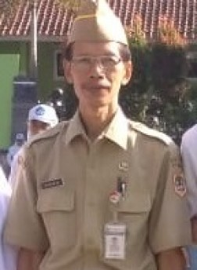

Hari ini adalah bukti perjuangan kalian selama tiga tahun. Jadikan ilmu dan pengalaman di MTS ini sebagai bekal untuk menapak ke jenjang berikutnya
Kota Jakarta, 21 Juni 2025 - Tawa, haru, dan rasa bangga menyelimuti Aula Serbaguna MTS Nurul Amal saat Puluhan siswa kelas IX mengikuti prosesi wisuda tahun ajaran 2024/2025 pada hari Sabtu, 21 Juni 2025. Acara yang mengusung tema “Langkah Awal Menuju Masa Depan Gemilang” ini menjadi momen bersejarah sekaligus perpisahan penuh kesan bagi para siswa, guru, dan orang tua.
Wisuda yang dimulai pukul 07.00 WIB ini diawali dengan prosesi pembacaan yasin dan tahlil oleh wisudawan saudara muhammah hilal, disambut khidmat oleh para guru dan tamu undangan. Suasana semakin hangat saat paduan suara siswa menyanyikan “Hymne Guru” dan “Hymne Madrasah”, membuat banyak mata berkaca-kaca.
Kepala Sekolah, Bpk Yusron jaelani M.P.di, dalam sambutannya menyampaikan rasa bangga dan harapan besar bagi para lulusan.
“Hari ini adalah bukti perjuangan kalian selama tiga tahun. Jadikan ilmu dan pengalaman di MTS ini sebagai bekal untuk menapak ke jenjang berikutnya,” ujarnya penuh semangat.
Acara juga dimeriahkan dengan penampilan kreasi seni dari para siswa, termasuk tarian tradisional, musik akustik, dan drama pendek bertema pendidikan. Tak ketinggalan, pengumuman siswa berprestasi menjadi momen yang paling ditunggu. Salah satunya adalah Ubaid Jihan, lulusan terbaik dengan nilai akademik tertinggi dan aktif di berbagai kegiatan ekstrakurikuler.
“Terima kasih untuk semua guru dan teman-teman. Tiga tahun ini luar biasa. Kami belajar banyak, tidak hanya dari buku, tapi juga dari kehidupan,” kata Ubaid Jihan saat menerima penghargaan.
Suasana haru mencapai puncaknya saat sesi pelepasan balon di halaman sekolah, sebagai simbol doa dan cita-cita para siswa yang dilepas ke jenjang pendidikan yang lebih tinggi. Para orang tua tampak bangga sekaligus terharu menyaksikan putra-putri mereka telah menyelesaikan satu fase penting dalam kehidupan.
Acara wisuda ditutup dengan foto bersama dan ramah tamah. MTS Nurul Amal kembali melepas generasi penerus bangsa yang siap menjejak langkah baru menuju masa depan yang lebih cerah.
PUBLISHED BY
